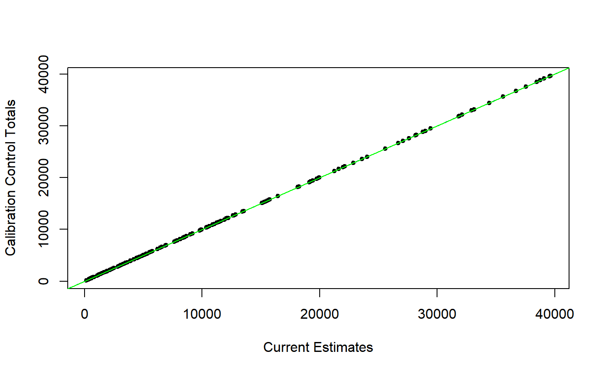

pop.plot.RdDraw a scatter plot of calibration control totals vs current estimates.
pop.plot(pop.totals, ...) # S3 method for pop.totals pop.plot(pop.totals, design, xlab = "Current Estimates", ylab = "Calibration Control Totals", lcol = c("red", "green", "blue"), lwd = c(1, 1, 1), lty = c(2, 1, 2), verbose = TRUE, ...) # S3 method for spc.pop pop.plot(pop.totals, design, xlab = "Current Estimates", ylab = "Calibration Control Totals", lcol = c("red", "green", "blue"), lwd = c(1, 1, 1), lty = c(2, 1, 2), verbose = TRUE, ...)
| pop.totals | A known totals data frame for a calibration task. Must be of class |
|---|---|
| design | A design object to compute estimates of the calibration control totals. Must be of class of class |
| xlab | A suggested label for the x axis. See also |
| ylab | A suggested label for the y axis. See also |
| lcol | Colors of reference lines, see ‘Details’. See also |
| lwd | Width of reference lines, see ‘Details’. See also |
| lty | Type of reference lines, see ‘Details’. See also |
| verbose | Print on screen minimum and maximum slopes? |
| ... | Other parameters to be passed through to plotting functions. |
Function pop.plot draws a scatter plot of calibration control totals vs current estimates derived from object design. This plot is sometimes very telling and may provide a first-level, rough assessment of how hard the calibration problem at hand will turn out to be in terms of constrained optimization.
A trivial calibration problem would correspond to points lying exactly on the y = x bisector line. A moderate spread around the bisector line without evident and anomalous patterns is usually a sign of a well behaved calibration task. Larger spreads signal increasing calibration complexity. The maximum and minimum slopes of lines connecting the origin to the points in the scatter plot provide often a reasonable clue about the minimum possible range for the calibration bounds [L, U], see bounds.hint. Evident and anomalous patterns emerging from the scatter plot not only generally imply harder calibration tasks, but can even reveal signs of underlying biases in the auxiliary variables. For instance, an extremely imbalanced pattern, with the overwhelming majority of points lying below (or above) the y = x line would be a striking symptom of upward (or downward) bias of the current estimates with respect to the true population totals.
In addition to the scatter plot of calibration control totals vs current estimates, function pop.plot draws three useful reference lines: (1) the maximum slope line connecting the origin to the points, (2) the y = x bisector line, and (3) the minimum slope line connecting the origin to the points.
If verbose = TRUE, the minimum and maximum slopes get printed on screen.
When the calibration control totals in pop.totals span different orders of magnitude (as it often happens in enterprise surveys) it is beneficial to look at the plot in logarithmic scale, which can be achieved by setting log = "xy" via argument ....
If pop.totals is of class spc.pop, i.e. it stores known totals for a special purpose calibration tasks, which are all zero (see prep.calBeta), then just one reference vertical line at x = 0 is added to the scatter plot.
If pop.totals is of class spc.pop but it is a fused data frame, encompassing simultaneous control totals for a special purpose calibration task and an ordinary calibration task (see pop.fuse), than two separate scatter plots are drawn.
Note that you can also pass to argument design the calibrated object obtained using pop.totals as known totals data frame: if calibration perfectly converged, points will lie on the y = x bisector line, otherwise the spread around the bisector line will provide a visual assessment of how significantly the calibration task failed.
The main purpose of the function is to draw a plot, anyway it returns invisibly the minimum and maximum slopes whenever it is meaningful to do so (thus excluding non-fused special purpose calibration task).
e.calibrate for calibrating weights, pop.template for the definition of the class pop.totals and to build a template data frame for known population totals, fill.template to automatically fill the template when a sampling frame is available, pop.desc to obtain a natural language description of control totals data frames.
## First prepare some design objects to work with: # Load household data: data(data.examples) # Build a design object: exdes<-e.svydesign(data=example,ids=~towcod+famcod,strata=~SUPERSTRATUM, weights=~weight) # Now suppose the known population totals for the calibration task # are stored in object pop07p: class(pop07p)#> [1] "pop.totals" "data.frame"dim(pop07p)#> [1] 2 81# These totals refer to the # 1) Joint distribution of sex and age10c (age in 10 classes) # at the region level; # 2) Joint distribution of sex and age5c (age in 5 classes) # at the province level; # For a natural language description, run: # pop.desc(pop07p) ## Here is the totals vs estimates scatter plot: pop.plot(pop07p, exdes, pch = 20)#> #> Minimum and maximum slopes: [0.38, 1.528] #># ...or with a log-log scale: pop.plot(pop07p, exdes, pch = 20, log = "xy")#> #> Minimum and maximum slopes: [0.38, 1.528] #>#> Warning: Calibration system is singular: switching to Moore-Penrose generalized inverse.#> Warning: Calibration system is singular: switching to Moore-Penrose generalized inverse.#> All Calibration Constraints (160) fulfilled (at tolerance level epsilon = 1e-07). #># ...the points now lie on the y = x bisector: pop.plot(pop07p, excal07p, pch = 20)#> #> Minimum and maximum slopes: [1, 1] #>## You are encouraged to try the function on control totals for special ## purpose calibration tasks (both simple and fused, see ?prep.calBeta, ## ?pop.calBeta, and ?pop.fuse). It might be interesting.